贝叶斯网络，我们分成了表示和推断两个课时；另外，因此它和后面的 HMM 等模型密切相关，因此需要熟练掌握。
Preliminaries for Probabilistic Reasoning
概率推断 Probabilistic Reasoning 在很多地方都有用，如 Diagnosis, Speech Recognition, Tracking ovjects, Robot mapping, Genetics, Error correcting codes 等。这一部分复习概率论相关内容，不加说明均以有限离散情况为例
- Random Variables
- Joint and Marginal Distributions
\[
P(t)=\sum_s P(t,s)
\]
- Conditional Distribution
\[
P(a|b)={P(a,b)\over P(b)}
\]
- Product Rule, Chain Rule, Bayes’ Rule
\[
P(y)P(x|y)=P(x,y)\\
P(x_1,...,x_n)=\prod_i P(x_i|x_1...x_{i-1})\\
P(x|y)={P(y|x)\over P(y)}P(x)
\]
- Inference
- Independence
独立性是 BN 中最为重要的概念（也是概率论中没怎么深入思考的），以下给出独立性和条件独立的判断条件：
\(X\), \(Y\) independent if and only if:
\[
\forall x,y: P(x,y)=P(x)P(y)\tag{1}
\]
\(X\) and \(Y\) are conditionally independent given \(Z\) if and only if:
\[
\forall x,y,z: P(x,y|z)=P(x|z)P(y|z)\tag{2}
\]
注意，是要求对 x 和 y 的任意取值都满足上式。另外，（1）式（2）式分别有等价表述
\[
P(x|y)=P(x)\\
P(x|y,z)=P(x|z)
\]
只是简单的移项变形，但两种表达式都比较常用（在 NB 中证明的时候多用下面的那两条），需要熟记。
Representation
下面正式进入到贝叶斯网络（Bayes' Net BN），即图模型（Graph Model）中，这一部分是网络的表示。首先，它是一种 Probabilistic Model；而我们对于概率的建模使用了图的形式，若两者（时间）之间并非独立，那么我们把两者连起来，独立则没有边连接——所谓模型必定是一种简化表示，我们这里的简化就是把一个全连接的联合分布简化为部分连接的图的形式，对于每一个事件（节点）的概率计算只依赖于与它连接的各节点。简言之
A Bayes net = Topology (graph) + Local Conditional Probabilities
另外，要说明的是，尽管我们使用有向图的形式，但其刻画的并非因果关系，而只是相关性的一种建模。例如，对于下雨和堵车，我们完全可以把边从堵车指向下雨而对模型的建模能力没有影响；当然，我们在设计 NB 的时候当然是考虑因果关系的
Topology really encodes conditional independence
我们宏观地看一下 BN 的表示上的优势，我们考察 Size of a Bayes’ Net，假设需要表示 N 个 Boolean variables。对于一个完整的联合分布来说，我们共有 \(2^N\) 中组合形式，所以大小为 \(2^N\) （我们可以把联合分布表示成一张表，每一行表示一种情况，那么共有 \(2^N\) 行）；而对于 BN 来说，我们假定每一个变量至多有 k 个父节点，对每一个节点 a，我们需要一张 \(2^{k+1}\) 的表来存储（注意还要考虑 a 本身），因此总的空间复杂度为 \(O(N2^{k+1})\) 。也就是说，NB 在表示联合分布的能力上和原来是一样的，而其优势在于 1. 节省存储空间；2. 加速计算。
Independence
独立性是 NB 中我们关心的部分，因为这决定了我们的整个计算方式。下面给出这一问题的 Formalization
Question: Are X and Y conditionally independent given evidence variables {Z}?
给定一组证据变量，考察待求的两变量之前的独立性。我们有一个完善的解决方案
Recipe: shade evidence nodes, look for paths in the resulting graph
Consider all paths from X to Y
No active paths = independence!
- 对于 X 和 Y 来说，我们考察所有连接两者的路径，只要一条路径是 active 的，那么两者就不独立
- 如何判断路径是否独立的方法是
D-separation：我们考察路径上的所有三元组，只要有一个三元组是 inactive 的（独立），整条路径就是 inactive 的。
下面就是考察不同类型的三元组了，结合下面的总结图来看
Causal Chains：第一种情况是一条顺序的链。按照常识，没有给定 B，那么 A 和 C 一定是相关的（可以给出一个例子 A 等概率为+/- ，B 的符号和 A 一致，C 的符号和 B 一致，那么\(P(+b,-c)=0\ne P(+b)P(-c)\)）；在给定 B 的情况下，A 和 C 独立，我们给出证明
\[
P(c|a,b)={P(a,c,b)\over P(a,b)}={P(a)P(b|a)P(c|b)\over P(a)P(b|a)}=P(c|b)
\]Common Cause：第二种是共同原因。没有给定 B，则 A 和 C 是相关的，用上面的例子就可说明；给定 B，A 和 C 独立，简证
\[
P(c|a,b)={P(a,c,b)\over P(a,b)}={P(b)P(a|b)P(c|b)\over P(b)P(a|b)}=P(c|b)
\]
Observing the cause blocks influence between effects.Common Effect：共同结果，这时和前两种情况不太一样，注意。在此时，为给定 B，则 A 和 C 是独立的，简证
\[
P(a,c)=P(a,c,+b)+P(a,c,-b)=P(a)P(c)P(+b|a,c)+P(a)P(c)P(-b|a,c)=P(a)P(c)
\]
然而，给定 B，则 A 和 C 不独立了！直观上理解，若 B 和 A 之间、B 和 C 之间的符号以很大的概率相同，而 A、C 分别等概率为+/-，那么\(P(+a)P(+c)=.25\)，而在给定 B 为 + 的情况下两者联合为正的概率就很大了。当然，这里只给出了一个直观的解释，我们可以构造 B 的条件分布表，举反例以证明。
另外，这里和情况不同的是，active triples 的最后一张图，B 的子节点确定了，那么 A 和 C 之间也不独立。Observing an effect activates influence between possible causes.
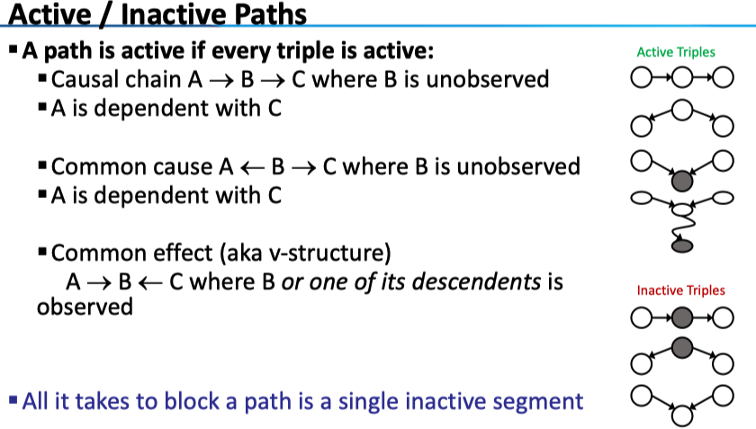
下面给出了两个例子：以便熟练运用 D-separation 准则
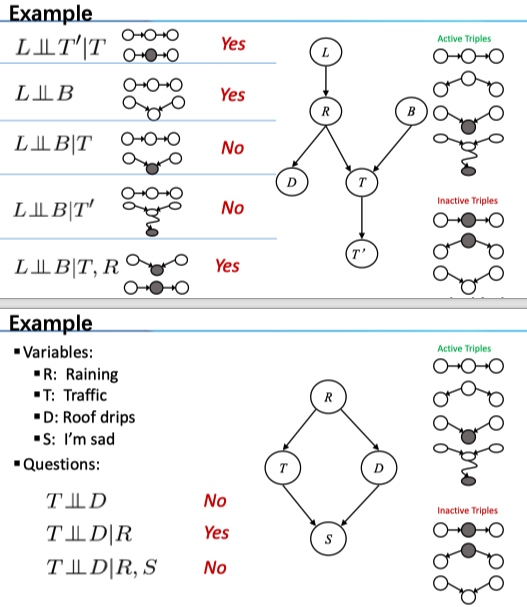
最后，我们要判断一个节点 X 和其他节点的独立性（或者我们观测部分节点，以保障 X 和其他节点不相关，想想 HMM 的例子），有以下结论
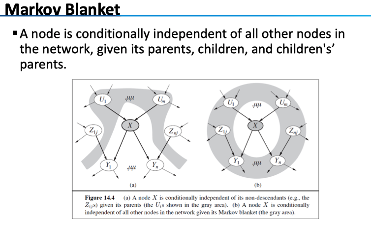
- 给定了 X 的父节点，那么 X 与其非后代节点 Z 均独立（使用
D-separation可说明） - 给定了 X 的父节点 U，孩子节点 Y，以及所有子节点除 X 外的父节点 Z，则 X 与图中其他的所有节点均独立（因为不会出现 Common Effect 中的那种情况了）
Inference
回顾一下： 贝叶斯网络是用一系列的条件分布来表示联合分布；而以上我们考察了网络中的独立情况。
下面，我们进入到 BN 的推断部分，给出问题的定义：我们感兴趣的是 query variables Q，而观测到了部分的证据变量 evidence variables E，将剩余的变量称之为隐变量 hidden variables H。其形式可以是求概率分布 \(P(Q|E_1=e_1,..,E_k=e_k)\)，更多时候可能是求极大 \(\arg\max_qP(Q=q|E_1=e_1...)\)
Enumeration
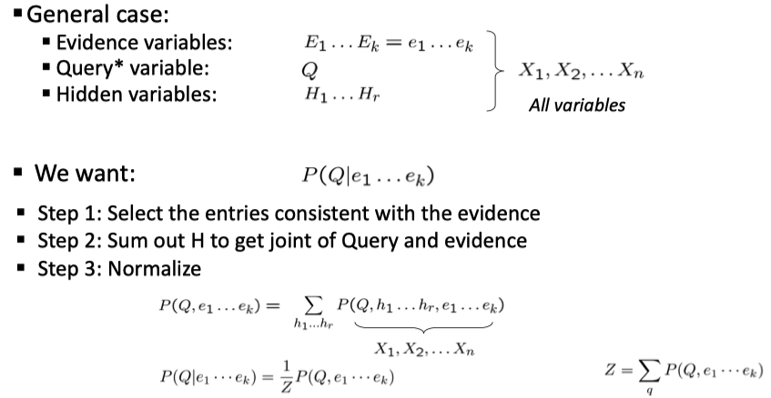
最先想到的显然是枚举：我们欲求\(P(Q|e_1,..,e_k)\) ，利用条件概率的定义，其与 \(P(Q,e_1,..,e_k)\) 成正比，而求这一个部分变量的边际分布，则需要对联合分布 \(P(Q,E,H)\) 进行消元，消去其中的隐变量，其中联合分布通过 BN 网络的形式得到。
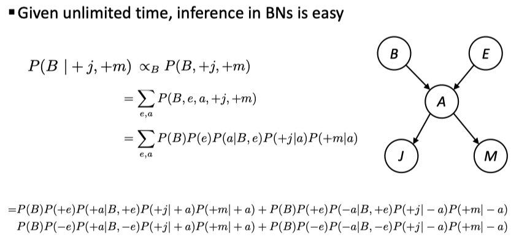
例如，在这个例子中，观测是 J、M，我们关系的是 B，隐变量是 A 和 E。运用枚举的方法，我们先要得到总体的联合分布（连接操作），再对隐变量进行消元（选投影操作）。然而，注意到，对于 A 进行消元的时候，式子中的 \(P(B)P(e)\) 两项并没有用到，因此没有必要全连接——我们对上式进行一定的变换
\[
P(b|j,m)=\alpha P(b)\sum_eP(e)\sum_aP(a,b,e)P(j|a)P(m|a)\tag{1}
\]
这里我们简化了写法，其中的 \(\alpha\) 是归一化系数。
Inference by Variable Elimination
这种思想就是变量消元 variable elimination——思想是交替使用 joining 和 marginalizing，我们来看（1）式对应的计算图：
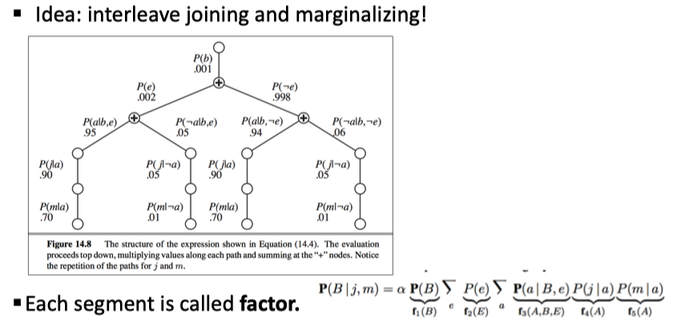
对于普通的 enumeration 来说，可以看到化成了四项，每一项是 5 个条件概率的乘积（若用计算图表示就是根节点直接分别为四个分支）；而在 variable elimination 中，我们分了两层进行 sum 操作：第一层对应了对 E 消元，第二层对应了给 A 消元。
是如何计算得到最终结果的呢？我们对一条链上的所有条件分布相乘，遇到加法节点进行汇总，从下往上计算。
我们来看右下角的式子：在 variable elimination 中，每一个部分称为因子 factor，注意仅需包含 Q 和 H（Q 是我们想要的，H 是我们要消去的，E 我们在消元中并不关心）；还是看这个式子，\(f_3(A,B,E), f_4(A), f_5(A)\) 这几个因子中包含 A，经过消元操作将其消去，形成新的因子 \(f_6(B,E)\) 在将其与\(f_2(E)\) 放在一起消去 E，这样就只剩下了一个包含查询 B 的因子。
这是主要的思想。因为 VE 是课程重点，我们另加以详细说明。总的来说，因子是一个用参数变量值为索引下标的矩阵。来回想一下，为什么我们在因子中只加入了 Q 和 H？这是因为 Q 和 H 的未知的，有多种可能性。从概率的角度来说，它可以作为一个随机变量——因此，事实上，我们不把 E 写出来只是因为可以把它看成一个常数，我们可以详细写为 \(f_4(j|A)\) ，其中随机变量仅为 A，于是 factor 就是一个向量，对应到条件分布表中，该表就只有 2 行；对于 \(f_3(A|B,E)\) 来说，因子就是一个三维张量，其中某一个元素就是 \(P(+a|+b,+e)\) ，对应到条件分布表，该表有 \(2^3\) 行。
前面提到 VE 相较于 enumeration 的区别：
- Enumeration: Join all factors, then eliminate all hidden variables
- Variable Elimination: Interleave joining and elimination
下面来看两种操作的细节
- Operation 1: Join Factors
join 操作就像数据库中的 join，它 Build a new factor over the union of the variables involved，对于每个个 entry 采取 pointwise product 操作。来看一个例子
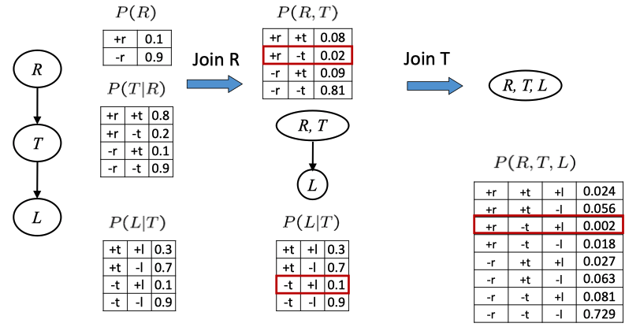
在这个链中，我们把 \(R\) 和 \(T|R\) 连接起来构成新的因子，再和 \(L|T\) 连接得到最终的联合分布 \(R,T,L\) 。这里的简单情况下，我们容易得出最终结果的意义（注意 L 在给定 T 的情况下与 R 独立，所以第二列中\(P(L|T)\) 实际上等于 \(P(L|T,R)\) 于是连接操作最终得到的是联合分），但在复杂情况下似乎比较难分析，但 anyway 最终得到的都是包含了所连接的因子中所有大写变量的一个分布。
Operation 2: Eliminate
第一步我们连接了不同的因子，第二步就是消去其中的隐变量了，对应到概率论中，就是求边际分布，所以，Elimination = marginalization；对应到数据库中，就是投影 projection 操作。例如对 \(P(R,T)\) ，我们 sum R 就得到了 \(P(T)\)。一个例子
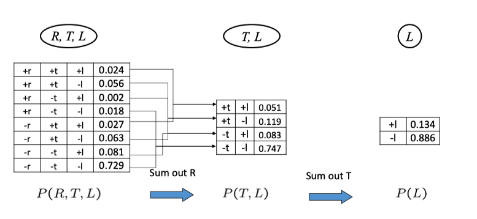
小结一下，类似（1）式中的乘法对应的是 join，而累加对应的是 elimination。最后，我们用一个简单的形式，来回顾一下最初那个问题的解法
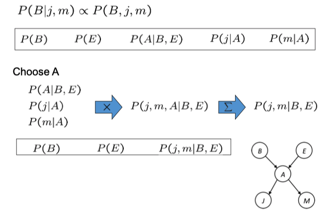
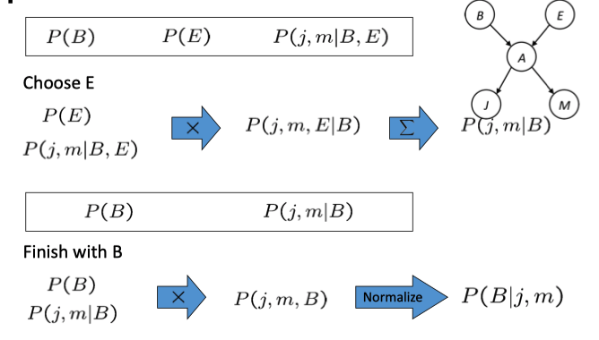
对于变量消元的顺序，在此只是说明不同的选择对于复杂度的是有很大影响的，但并没有一个普遍的维持一组 small factor 的方法。对于考试来说的话，BN 一般较为规整，可能会考察复杂度，如下例
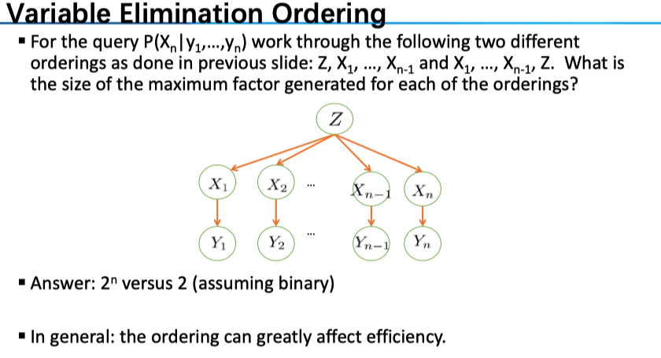
Sampling
给出一种近似求解的方法。在模拟量很大的情况下 LLN 保障了得到的解接近真值。其中有包含了多种思路
Prior Sampling：一次完整的 sample 显然要对所有的变量赋值，那我们可以根据 BN 的拓扑顺序依次利用条件概率进行模拟。叫做 Prior Sampling ，所以它针对的是无证据变量 E 的那种最为简单的推理。
Rejection Sampling：当有证据变量 E 的时候就叫做 Rejection Sampling，显然我们选取其中符合 E 的那些样本，计算近似的概率。
Likelihood Weighting：因为在 Rejection Sampling 中我们会拒绝部分和 E 不相符的那些样本，效率很低，因此我们希望 fix evidence variables and sample the rest，相应地给每个样本赋予权重。
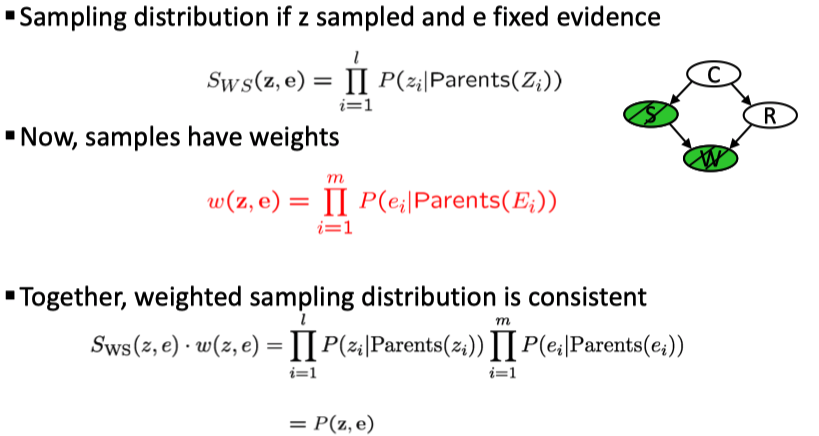
注意权重是所有的证据变量的条件分布（不包含 Q），这样保证上面那条式子的正确性。
Gibbs Sampling：然而，似然加权的方法仍有一定的问题：Evidence influences the choice of downstream variables, but not upstream ones (C isn’t more likely to get a value matching the evidence)（好的并没有看懂🐶）。算法：
keep track of a full instantiation \(x_ 1 , x_ 2 , …, x _n\) .
Start with an arbitrary instantiation consistent with the evidence.
Sample one variable at a time, conditioned on all the rest, but keep evidence fixed.
Keep repeating this for a long time.
基于马氏链的性质，我们有 in the limit of repeating this infinitely many times the resulting sample is coming from the correct distribution。该方法比似然加权法好的地方在于 Rationale: both upstream and downstream variables condition on evidence.
Note: 我们使得初始状态是符合 E 的，然后每一更新一个非 Q 变量——如何更新呢？是基于在其他变量值给定的情况下的条件分布。一个具体的例子
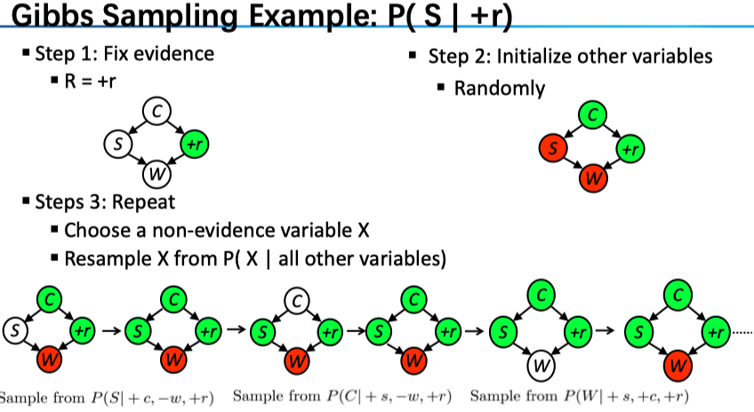
注意到，在计算条件分布的时候仅需要考虑带模拟变量相关的那些量：例如对 \(P(S|+c,-w,+r)\) 来说，由于 \(P(S,+c,-w,+r)=P(+c)P(S|+c)P(+r|+c)P(-w|S,+r)\) ，也就是说其正比于 \(P(S|+c)P(-w|S,+r)\) （其他量为常数，我们将其归一化即可），这就减少了计算条件分布的难度。